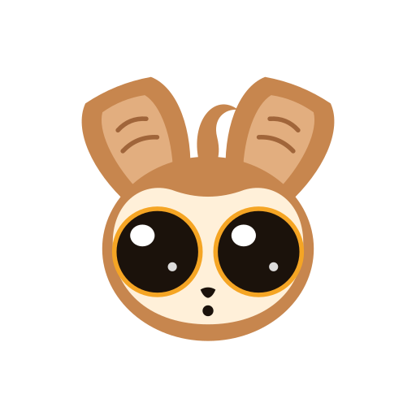
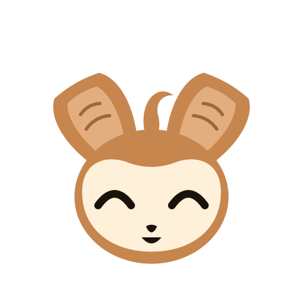
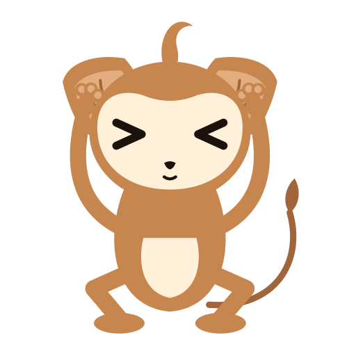

Kasi stickers
Eight animated stickers, one for each moment Kasi has in the product. Each one is a single SVG that loops on its own, in a browser or an <img>, with no script. Shown here on the night ground and on paper. Back to the brand sheet.














Built from site/kasi.js by node site/brand/stickers/build.cjs, so a change to Kasi's drawing reaches every sticker on the next build. Motion follows the brand sheet: a blink takes 120 ms, ears twitch up to 7°, the head turn takes 900 ms. Kasi never talks: the yellow lines are the captions it hears.